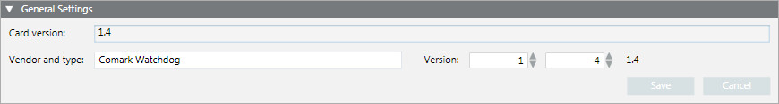

Comark Monitor Card General Settings
The General Settings expander allows you to configure the Comark monitor card settings.

General Settings Fields | |
Item | Description |
Card version | Text field that indicates the firmware version actually read from the card. In case of communication problems (no supervision message from the card), this field indicates |
Vendor and type | Enter the card description (for example, |
Version | Enter the major and minor version numbers. The version will be used to identify the configuration export files. |
Save | Save any changes. |
Cancel | Abort the operation. |

NOTE:
The card is expected to be internally connected on the COM5 serial port. In case of communication problems with a Comark Card, check in the Windows Device Manager that this connection is properly set.